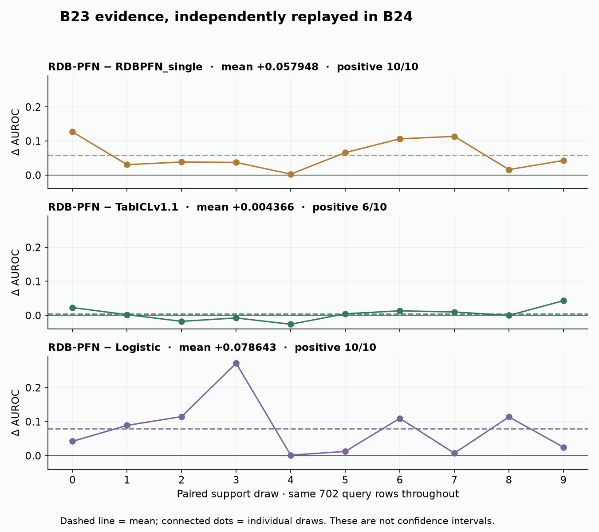
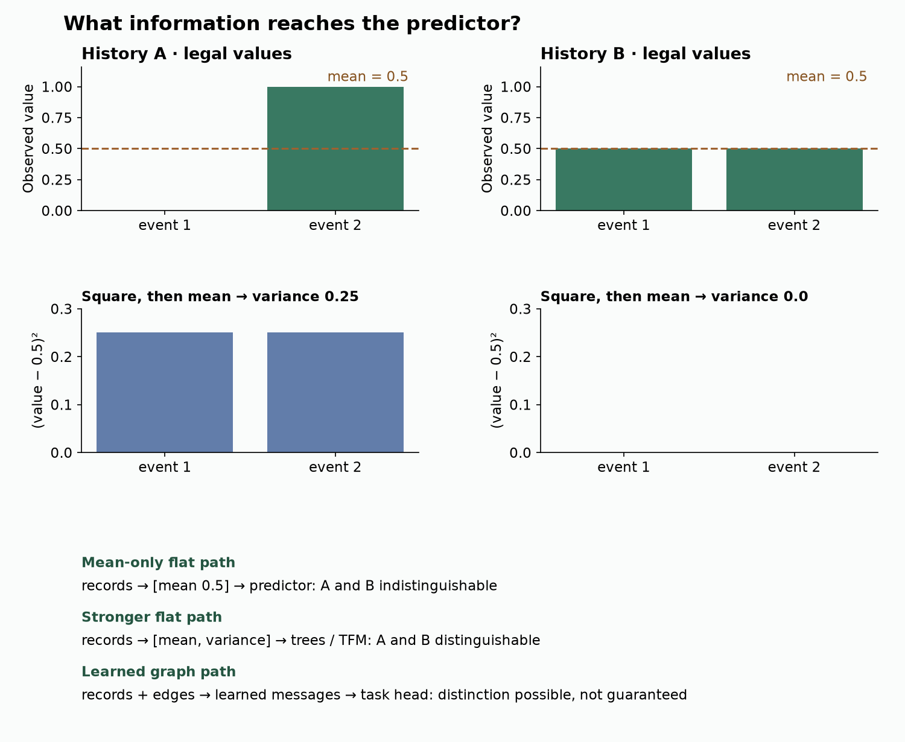
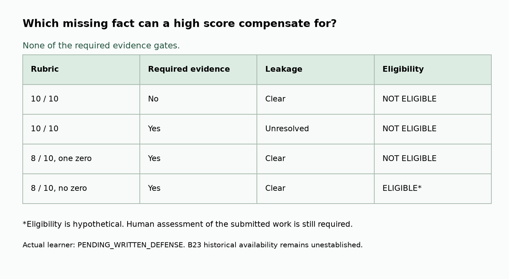

B24 · Defend the architecture and the thesis¶
The win: write a claim that your evidence can support, choose a fair way to challenge it, and say what result would make you change your mind.
Previous: B23 · reproduce one comparison · Context and cost: B18a · Metrics: B19a · Next: Year 6 handoff
Student notebook · Executed notebook · Reference card · Five-page proposal template · Editable template · Reproduction contract
Route through the lesson. Spend 10 minutes on the claim and worked example, 15 on baselines and falsification, then use the notebook to audit the evidence. Draft the proposal over later sessions. This is the bridge's exit defense; reading it does not mark the bridge complete.
1 · Recall the boundary before defending it¶
Without reopening B23, explain why ten support draws are not ten databases. Recall how B18a counts a rebuilt context and how B19a separates ranking from probability quality. Write one sentence each, then check the linked lessons.
B23 asked whether a declared computation was reproduced. B24 asks which research decision that computation justifies. The mission is to test whether learned relational models deliver value beyond strong single-table systems. A defense must therefore explain where information enters, what the baseline receives, and which observation would contradict the claimed benefit.
A claim is a statement about a specified population and procedure. Evidence is the observed result and its provenance. A warrant is the reasoning connecting the evidence to the claim. A falsification test is a planned observation that would make us revise the claim. These four pieces belong together.
In plain terms. “It scored higher” is an observation. “Therefore graph attention is necessary” needs another experiment.
2 · Start with the result we actually have¶
Frozen experiment. B24-RESEARCH-DEFENSE-AUDIT replays the complete B23 packet: 30 published-model checkpoint evaluations and ten course logistic fits. Each arm uses the same ten draws of 512 labeled supports and the same 702 queries from rel-f1/driver-dnf. A support is a labeled example available to the predictor. A query is a row whose answer is withheld until evaluation.
The primary reading is RDB-PFN v5, evaluation protocol and Table 9. Inspect its selected column, then compare the B23 frozen contract. All B23 inputs, target orientation, preprocessing and checkpoints remain fixed. B24 changes only the audit implementation; it makes no new model predictions.
| Arm | Mean AUROC | Sample SD over supports | Evidence lane |
|---|---|---|---|
| RDBPFN | 0.721938 | 0.019983 | Selected published configuration |
| RDBPFN_single | 0.663990 | 0.034177 | Selected published configuration |
| TabICLv1.1 | 0.717571 | 0.009769 | Selected published configuration |
| Logistic | 0.643294 | 0.085891 | Course logistic baseline |
Worked example. The mean paired RDB-PFN minus TabICL effect is +0.004366 AUROC. RDB-PFN wins on six of the ten draws. “Paired” means subtracting model scores with the same support identity before averaging. AUROC measures how often a positive example ranks above a negative one, with half credit for a tie. It does not establish calibrated probabilities. The sample standard deviation (SD) describes how scores vary across support draws: subtract their mean, square the differences, sum them, divide by nine for ten draws, then take the square root. It is not a confidence interval for performance on new databases.


A defensible statement is: “On this released F1 task and these ten support draws, RDB-PFN has a higher mean AUROC than TabICL v1.1.” A stronger statement about other databases needs independent database evidence. A statement about graph-native inference is unsupported by this comparison: RDB-PFN and TabICL here both consume the same materialized feature table.
Independent replay. B24 authenticates the archive, checks every complete (driverId, date) identity, support identity and label, recomputes all 40 AUROCs using average ranks, and reconstructs all ten logistic probability vectors from saved coefficients. The largest AUROC discrepancy is below 1.2e-16; the baseline vectors agree exactly. These are replay checks of the B23 artifacts, not another fit.
Scope check. Historical checkpoint identity and raw feature availability remain
NOT_ESTABLISHED. The checkpoint uses width 96 where the paper appendix describes 128. Released labels retain their original orientation, which complements the current raw DNF reconstruction. Full feature regeneration, pretraining and the whole-paper benchmark remainNOT_RUN. Numerical agreement cannot resolve those gaps. B23's fixed logistic comparator is not tuned trees.
3 · Defend an information path, not a model name¶
A representation is the form in which information reaches the predictor. An architecture is the set of operations mapping that representation to an output. A training prior is the distribution of tasks used to learn the weights. Changing any one can change predictions. Name which one your hypothesis concerns.
Worked example: two histories, one summary. History A contains values [0, 1]; history B contains [0.5, 0.5]. Both means equal 0.5. Their population variances are 0.25 and 0. A predictor receiving only the mean cannot distinguish them. This is loss in the representation, not proof that the predictor is weak. Add variance to the flat features and the distinction returns.
Follow the computation
An architecture defense needs a distinguishing example
- 1
Name the retained representation
Mean-only flattening maps a history to one scalar.
- 2
Construct a collision
Two different histories can map to the same scalar.
- 3
Repair the relevant distinction
Adding variance separates this particular pair.
- 4
Limit the conclusion
A repaired example motivates a test; it does not prove universal sufficiency or model superiority.
Open the decisive operation
After adding variance, have you preserved every possible distinction between histories?
No. It repairs this collision only. Different histories can still share both mean and variance.
Trace answer: No. It repairs this collision only. Different histories can still share both mean and variance.
Illustrative architecture-defense example. B24 remains saved-evidence replay, not fresh model execution.


The diagram asks a precise question: which operation can preserve the distinction? For A, subtract the mean to get [-0.5, 0.5], square to get [0.25, 0.25], and average to get 0.25. For B, both centered values are zero. A learned neighbor aggregator might learn a useful distinction; a hand-built variance feature already supplies this one. Neither is guaranteed to win a real task.
Three architecture paths belong in your proposal:
- Flat path: legal historical records → fixed aggregates or deep feature synthesis → vector → trees, a multilayer perceptron (MLP), or a tabular foundation model (TFM) → prediction. An MLP is a stack of learned linear transformations and nonlinear activations. Deep feature synthesis composes declared aggregations along table relationships. It can retain substantial relational information.
- Graph path: the same legal records → typed entities and foreign-key edges → learned neighbor messages → entity representation → task head. A task head converts the learned representation into the prediction. See RelGNN/RelGT mechanisms in B11.
- Cell path: legal table cells and their row/column/relationship identities → typed cell tokens → allowed attention operations → task output. Attention combines permitted source vectors according to learned weights. See RT in B10. Trace the actual sampler as well as the attention mask.
RDB-PFN belongs to the flat inference path even though its pretraining generator is relational. TabSTAR's parameter updates differ from forward-only in-context adaptation. A hypernetwork generates predictor weights; a support-context method supplies labeled input state. B13, B07, and B07a supply the model-specific traces.
Your task. Sketch your chosen path. Mark one load-bearing operation, its legal inputs, its output, and a simpler operation that could replace it. Predict the effect of that replacement before running it. An ablation changes a specified part while preserving the rest of the comparison.
4 · Make the baseline capable of disproving you¶
A baseline is a comparator answering a research question. Its value comes from the alternative explanation it tests. A weak baseline may be easy to beat while leaving the central explanation untested.
Worked decision. If the thesis says learned graph aggregation improves over engineered summaries, include tuned trees with time-safe features. Give both methods access to the same eligible historical records and target labels. Their representations may differ; record the transformation and cost of building each. Also include a strong flat foundation model to test whether task pretraining, rather than graph computation, explains the gain.
Matched information means comparable access to raw observations, labels and prediction-time history. It does not require identical tensors for a graph and a tree. Matched selection budget means a declared equal opportunity to choose a configuration using training/validation data. Log total training, feature engineering, inference, failed attempts and human design effort separately. Equal tuning budgets do not equalize inherited pretraining cost.
Use the inventory below to make decisions. “Core” means required in the proposed future comparison unless a task-specific reason is recorded. “Conditional” means include when its mechanism addresses the hypothesis. “Defer” means a named limitation and a reopening condition, never “it would probably lose.” No inventory row is a new B24 training result.
| Family / evidence route | Decision for the example proposal | What it tests; reason to reopen |
|---|---|---|
| Tuned trees + time-safe FE · B14 | Core | Can strong engineered summaries explain the gain? Include full feature/search cost and legal history. |
| RealMLP / TabM / TabPack · B02 | Core family; select and justify | Could a strong supervised flat neural predictor or ensemble explain it? Pin shared versus packed parameters and budget. |
| TabR / ModernNCA · retrieval background | Conditional | Include when local similarity is the proposed advantage; otherwise document neighborhood/metric cost and defer. |
| TabPFN · B03 | Core candidate | Strong synthetic-pretrained flat prediction. Choose one version within task/feature/class limits. |
| TabICL · B04 | Core | Strong flat ICL comparator. B23 uses v1.1; a current v2 run is a separate versioned comparison. |
| TabDPT / Turbo · B05 | Conditional | Test real-data pretraining plus retrieval; admit overlap and target-free retrieval before execution. |
| Mitra / Mitra-v2 · B06 | Conditional | Does prior diversity or adaptation explain benefit? Distinguish fine-tuned from forward-only settings. |
| CARTE / ConTextTab / TabSTAR · B07 | Conditional on useful text/semantics | Include name/text controls when semantic information is material. For anonymous numeric inputs, explain omission. |
| SAP-RPT-1-OSS · official card | Alias of ConTextTab | Do not double-count the same checkpoint. Commercial SAP variants require separate access records. |
| MotherNet / HyperFast / iLTM · B07a | Conditional on repeated serving | Does generating a predictor amortize task construction? Count rebuilds and any retained retrieval state. |
| TabFlex / Wide / Orion / TabSwift · B04a | Conditional scaling control | Select one matching the stressed axis: rows, features or classes. A capacity claim alone does not establish accuracy. |
| RDBLearn / TabPFN-Rel · B14 | Core relational-information baseline | How much can stronger flattening/aggregation recover? Pin the information boundary and materialization protocol. |
| RelGNN / RelGT · B11 | Core graph family | Test learned relational computation directly. Select one justified architecture and preserve task-specific tuning. |
| RT-v1 / accessible relational FM · B10, B12 | Conditional on hypothesis/access | Test cell-level or cross-task transfer when authenticated checkpoints and legal inputs are available. Missing access is not a negative result. |
| Griffin / OpenRFM / KumoRFM · B12 | Conditional, each access mode separate | State whether weights, context or both adapt. Public and provider-controlled systems need distinct reproducibility records. |
| RDB-PFN / PluRel · B13 | RDB-PFN evidence; PluRel conditional | Relational synthetic pretraining is distinct from graph-native prediction. B23 supports a released flat-input result only. |
| LimiX · official release | Defer joint-objective extension | Ranking-only example does not test joint imputation. Reopen when missing-value modeling is the hypothesis; freeze exact release/terms. |
| TabFM · primary report | Conditional flat comparator | Base, TabFM+ and TabFM-Auto differ in ensembling/feature/search work. Reopen after the chosen operating point fits the declared budget. |
| EXAONE · primary report | Conditional flat comparator | Cross-axis processing is another explanation for strong flat predictions. Select on development evidence and budget, not final test rank. |
| Nori · official card | Conditional flat comparator | Include if the pinned released task/configuration fits the comparison; model-card access is not full pretraining evidence. |
| RT-J · author page | Defer until artifact admission | A separate candidate from RT-v1; require original checkpoint/code/protocol identity before a named reproduction. |
| Seldon · provider report | Excluded from B24 execution | Zero-paid-compute replay does not evaluate provider access. Reopen with a matched protocol and approved cost; provider benchmark is not independent replication. |
| NEXUS · official product page | Excluded from B24 execution | Product/API claims are insufficient for a numerical comparison. Reopen with reproducible inputs, outputs, version and approved access budget. |
Current candidate check · 4 October 2026. The source receipt records the dated official pages and access results. This is a candidate/source audit, not a current leaderboard. LimiX-2, TabFM, EXAONE, Nori and RT-J remain explicit decisions even if their elective was skipped. Seldon and NEXUS provider claims require the same information/cost protocol before comparison. A provider-controlled benchmark is not independent verification.
Selection rule. Pick a compact set that can falsify the chosen explanation. If the full comparison exceeds the budget, report the missing runs and narrow the empirical claim. Do not remove a strong competitor after seeing its test score. Cite both the reason for exclusion and the evidence that would reopen the decision.
5 · Freeze two ways the thesis could fail¶
A falsification rule must name the task, challenger, reference, primary metric, direction, numerical threshold, matched information and selection budget, and the action taken if the rule fires. Preregistration means fixing those decisions before inspecting the evaluation outcomes they govern.
For a higher-is-better metric such as AUROC, define the oriented effect as challenger minus reference. For a lower-is-better loss, define it as reference minus challenger. Positive then always favors the challenger. A rule such as “revise if mean effect is at most zero” has an unambiguous boundary: a tie triggers revision.
- Simpler-baseline test. On a named future task, compare the proposed relational method with tuned trees plus time-safe features. If the prespecified paired mean effect is at most zero, withdraw superiority on that task. Preserve every planned run, including failures. A practical margin greater than zero can be chosen before evaluation if the deployment benefit requires it.
- Untouched-task test. Lock a database/task that has not informed checkpoint, architecture, feature, prior or threshold selection. Compare with the locked strongest baseline. If the effect is at most the prespecified threshold, narrow the transfer claim. Record prior dataset use across this course; another F1 support seed is not an untouched task.
An untouched task is stronger evidence than another seed, but one new task still cannot establish universal transfer. If no genuinely untouched candidate is available, record PENDING_TASK_RESERVATION; do not relabel a reused benchmark. Uncertainty should match the sampling unit: show support variability within tasks and task-level variability when claiming cross-task benefit.
Predict when the reversal rule fires
A hypothetical future comparison. Change the threshold only to explore a different preregistration, never after observing real test results.
Metric contract from B19a. State whether the decision needs ranking, class probabilities, a point estimate or a predictive distribution. The example F1 claim is ranking-only, so AUROC is primary and calibration is unestablished. Calibration asks whether stated probabilities agree with observed frequencies. A proper probability score rewards reporting the true probability distribution in expectation. If a downstream decision uses probabilities, predeclare such a score, a separate calibration partition and calibration diagnostics. Do not fit calibration on final test labels. Use the metric/calibration contract.
Context contract from B18a. Freeze support selection, support-label availability, preprocessing, checkpoint, cache identity, update trigger, rebuild frequency, cold/warm latency, memory and total cost. Define what happens when an entity or label arrives late. Changing a support row can change the deployed predictor without changing weights. Review context as state.
Task expansion is conditional. If your thesis forecasts future outcomes, add B19b's horizon, origin and as-of covariate contract. For a static classification thesis, explicitly mark forecasting out of scope. Forecasting contract.
6 · A score cannot repair invalid evidence¶
The defense rubric has five axes. Score each 0 for missing/invalid, 1 for partial, or 2 for complete and justified. An assessor must read the actual proposal and evidence; string-filled fields are not proof.
| Axis | What earns 2 |
|---|---|
| Protocol validity | Frozen identities, temporal availability, selection and metric; unresolved gaps bar claims needing them. |
| Baseline fairness | Strong relevant comparators, matched information and selection budgets, justified exclusions. |
| Reproducibility | Named scope, executable path, immutable inputs/predictions and complete evidence for the declared claim. |
| Evidence interpretation | Effect and variability at the right unit; source, replay, fresh execution and historical claims separated. |
| Falsifiability | Two concrete reversal tests with untouched-task audit and a decision that changes if they fail. |
Eligibility requires at least 8/10, no zero, no unresolved leakage, and the required reproduction evidence. A proposal about future research may cite complete selected-release evidence while declaring historical validity open. A claim of historically valid deployment cannot pass using the same packet. The assessor determines which gate the actual claim requires.


Try to compensate for a missing gate
Hypothetical scores and evidence flags. Changing these controls never changes B23 provenance or assesses your work.
Scope check. The controls simulate hypothetical assessment inputs. They do not change the actual B23 evidence or grade your writing. Your status remains
PENDING_WRITTEN_DEFENSEuntil your submission is assessed. A replay proves executable evidence, not learner mastery.
7 · Build the five-page defense¶
Open the printable proposal template. It supplies five page-sized prompts, not a filled learner answer:
- Hypothesis and claim: population, mechanism, practical motivation, current evidence and nonclaims.
- Architecture and coverage: your end-to-end information path and justified family inventory.
- Frozen protocol: identities, splits, availability, selection, metrics, context/update/cost contracts.
- Evidence and limits: B23 replay, per-draw effects, deviations, run status and missing historical facts.
- Falsification and decision: two reserved tests, rubric evidence and next research action.
A short worked opening, not your submission. “I hypothesize that learned neighbor aggregation can improve a specified future task beyond tuned trees with time-safe aggregates at a fixed selection budget. B23 motivates studying pretrained predictors: it shows a small positive mean RDB-PFN–TabICL difference on one released F1 task. Both methods use flattened inputs, so this does not establish my graph hypothesis. I will test the graph-specific claim with matched eligible records and a strong flat comparator. Missing historical feature provenance bars a deployment-validity claim from B23.”
The notebook implements three decisions you need to defend: pair effects by draw identity, apply the rubric without bypassing gates, and reject incomplete falsification contracts. Blank and incorrect functions must fail before a report is produced. A validator checks structure; it cannot verify that your prose is true or that a task was never used. Attach the underlying prior-use and availability evidence for the assessor.
8 · Exit and Year 6 handoff¶
Submit the proposal, architecture map, baseline table, B23 evidence folder plus B24 replay receipt, and two falsification contracts. Ask the agent to challenge one warrant and assess each rubric axis. Do not fill a learning record from author-run checks.
| Next lesson | B24 handoff |
|---|---|
| L201 · Hypothesis | Narrow claim, mechanism and revision condition. |
| L202 · Sources | Versioned primary-source matrix and access/deviation ledger. |
| L203 · Protocol | Task reservation, splits, legal information, selection and metrics. |
| L204 · Baselines | Inclusion/exclusion decisions and total budget accounting. |
| L219 · Stress tests | Simpler-baseline and untouched-task failure rules. |
Return after 1, 7 and 30 days. Day 1: derive the two-history variance example from memory. Day 7: defend one exclusion, then argue for including it. Day 30: reconstruct the two failure rules without looking. Bring any unclear step back to the agent; ask for another worked example or a skeptical review.
Reproduction appendix · exact scope and commands¶
From the repository root, run:
.venv/bin/python labs/_budget_b24.py .venv/bin/python labs/_audit_b24.py
.venv/bin/python labs/_budget_b24.py .venv/bin/python labs/_verify_b24.py
The downloaded notebook embeds the authenticated evidence and visible audit code; it needs only Python and NumPy to replay. It can run without a repository checkout or network access. The executed HTML is an author reference. Live Colab execution remains NOT_CHECKED.
B24 uses a $0 paid-compute budget and a 3,600-second aggregate local numerical/check cutoff, including preparation, failures and validation. The local ledger records attempts. At cutoff, leave INCOMPLETE; retain all declared runs in the contract. A separate fresh-inference path remains documented in B23; B24 does not dispatch it.
Full replay report · Independent verification · Primary paper · Bridge specification